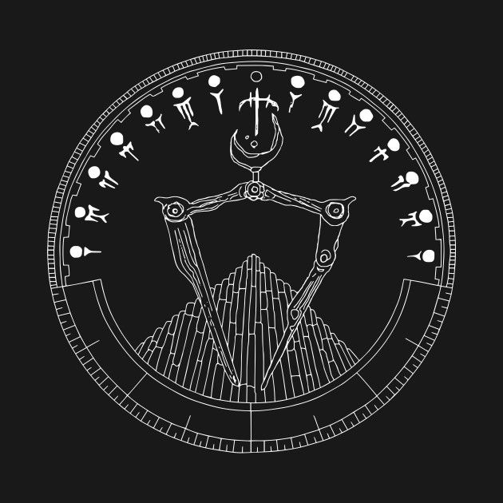

Description
The Knights of the Eastern Calculus (often the Knights) is a group
of pseudonymous, notorious and highly-skilled computer crackers.
They interact with Lain in various ways, possibly trying to trick
her into entering The Wired or joining them iding the
implementation of Protocol 7.
They use Taro to get to her. In some way, they are responsible for
the use and distribution of the psyche chip, which somehow
massively improves network performance despite being a CPU. The
mysterious organization is also presented as the creators or
distributors behind many of the advanced computer-related devices
include KIDS and Accela.
Members
- Shoko Masatsugu
- Masuoka Takuyoshi
- Freeter
Name: The Knights
Description
- Occupation: Hacker Association